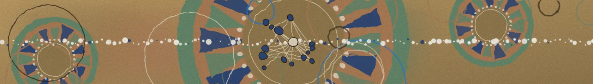

Análises

Corresponsáveis: o que os registros públicos acrescentam à rede de Willer Tomaz
Duas apurações de outubro de 2026 mapearam a rede em torno do advogado Willer Tomaz: o relatório A Rede de Flávio, do coletivo DemocraciaBR, e a reportagem Uma sala e 90 empresas, da Agência Pública. As duas partem do quadro de sócios da Receita Federal e do endereço de uma sala em Águas Claras (DF). Esta análise refaz esse cruzamento e o estende a cadastros públicos que nenhuma das duas consultou: a dívida ativa da União, a cota parlamentar do Senado e da Câmara e o histórico mensal de endereço das empresas.
Quase tudo o que o relatório afirma a partir de registro confere. O que segue são achados que não aparecem em nenhuma das duas apurações, nem, até onde pudemos verificar, na imprensa. Depois vêm os pontos em que os registros confirmam o que já foi publicado e algumas correções. Nenhum desses achados afirma crime. Dever imposto, mudar de endereço, receber reembolso parlamentar ou contratar empresa endividada são atos lícitos. Os registros estão aqui para que possam ser conferidos e, se for o caso, investigados.
As pessoas sem cargo público aparecem pelo papel que têm no registro, como no relatório original. Nenhum CPF é reproduzido.
1. Cinco empresas de mídia do grupo respondem juntas pelas mesmas dívidas com a União
A TV Difusora do Maranhão, a Difusora Comunicação S/A, a Rádio Curimã, a Rádio Caxias e a Jota Comunicação S/A constam na dívida ativa da União com 532 inscrições distintas, que somam R$ 28,5 milhões, sobretudo IRPJ, Cofins, CSLL e PIS. Delas, 518 estão negociadas ou parceladas.
O dado novo é a forma. A mesma inscrição aparece com uma empresa como devedora principal e as outras como corresponsáveis. Em 454 das 532 inscrições (R$ 17,1 milhões), as cinco empresas aparecem ao mesmo tempo. A corresponsabilidade indica que, para a Procuradoria-Geral da Fazenda Nacional, as cinco são cobradas como um grupo só. A própria Procuradoria publica um termo de transação assinado em conjunto pelas cinco, sem os valores. Não encontramos reportagem com o tamanho da dívida nem com a corresponsabilidade.
| Empresa | Inscrições em que aparece | Valor (contando a dívida compartilhada) |
|---|---|---|
| Rádio e TV Difusora do Maranhão | 489 | R$ 21,6 milhões |
| Difusora Comunicação S/A | 463 | R$ 21,3 milhões |
| Rádio Curimã | 481 | R$ 19,2 milhões |
| Rádio Caxias | 461 | R$ 17,6 milhões |
| Jota Comunicação S/A | 454 | R$ 17,1 milhões |
| Sem repetição | 532 | R$ 28,5 milhões |
Somar a última coluna conta a mesma dívida várias vezes. O total sem repetição é a última linha.
Duas dessas empresas ligam a dívida diretamente às pessoas do caso:
- Willer Tomaz é sócio da Rádio Caxias desde 18/10/2021.
- A Jota Comunicação é a empresa em que a esposa e a filha do senador Weverton Rocha (PDT-MA) assumiram a diretoria, com entrada em 29/12/2025, fato já registrado no relatório.
Pelo registro da Procuradoria, a Jota não é uma empresa avulsa do grupo: ela aparece em todas as 454 inscrições compartilhadas.
Outras empresas do grupo têm inscrições próprias: a Friponor (R$ 4,2 milhões) e o escritório Willer Tomaz Advogados Associados (R$ 1,66 milhão). Os valores são os consolidados no segundo trimestre de 2026.
2. Em janeiro de 2026, a Jota passou a funcionar no endereço da holding de Weverton
A Rocha Holding Patrimonial, holding da família do senador, estava domiciliada na sala 2601 de Águas Claras até setembro de 2025. Em outubro de 2025, passou para a Rua dos Holandeses, 6, sala 104, Edifício Tech Office, em São Luís. O e-mail no cadastro passou a ser o da D J Agropecuária, outra empresa do senador.
A Jota Comunicação ficou até dezembro de 2025 na Rua da Camboa, 120, em São Luís, o endereço da TV Difusora e da Difusora Comunicação. No cadastro de janeiro de 2026, ela aparece na mesma sala 104 do Tech Office. É o mesmo mês em que a esposa e a filha do senador aparecem na diretoria.
O relatório situa a Jota no endereço do grupo Difusora e a Rocha Holding em Brasília, sem citar a mudança das duas. Desde janeiro de 2026, a empresa do grupo WT e a holding do senador dividem o endereço.
3. Uma senadora reembolsou combustível no posto de Weverton
Entre setembro de 2021 e abril de 2023, a senadora Eliziane Gama (MA) pediu à cota do Senado 31 reembolsos, que somam R$ 87.673,73, por combustível comprado no Petro São José Ltda (CNPJ 35.711.858, hoje F de A S Campos Combustíveis). Durante todo esse período, o senador Weverton Rocha era sócio do posto (de 05/12/2019 até a foto de agosto de 2024). A filha dele passou a administrá-lo em 04/04/2023.
É dinheiro público de um mandato pago a uma empresa de outro senador do mesmo estado. Abastecer em posto de colega não é ilícito. O registro só mostra para onde a verba foi. O relatório trata de outro posto da família, o Petro São Francisco, e não deste.
4. O 3131-3131 e o telefone da Voga nunca aparecem juntos
Em várias seções, o relatório trata o número 61 3131-3131 como telefone da Voga Serviços Contábeis. Ele também registra, na seção 29, que o telefone próprio da Voga é o 61 3964-0691. Os dois números, porém, não se cruzam:
- Na foto de agosto de 2025, a mesma que o relatório usa, 223 estabelecimentos têm o 3131-3131, como diz o relatório. No cadastro de setembro de 2026, são 272.
- Nas duas fotos, nenhum deles tem também o 3964-0691.
- Nas duas fotos, só 25 têm e-mail @vogasc.com.br.
- Em parte deles, o 3131-3131 vem junto de dados genéricos de preenchimento
(
123@gmail.com, segundo telefone00000000). Isso aponta para quem preenche o cadastro, não para quem atende o telefone. - O número também aparece em empresas do grupo WT no endereço da própria WT, no Lago Sul: na Carbon Cer desde a abertura (2023), na WT Investimentos (com e-mail @willertomaz.adv.br, aberta em 2021 e baixada em 2022) e, desde 06/2026, na Friponor.
"Mesmo preparador de cadastro" se sustenta. "Telefone da Voga", para o 3131-3131, é inferência.
O telefone que é de fato da Voga leva a um elo que o relatório não cita: a Aragão e Tomaz Advogados Associados, sociedade de Willer Tomaz com o ex-ministro da Justiça Eugênio Aragão desde 18/09/2018, registrada num escritório virtual da Av. Paulista, 1636, usa no cadastro o 61 3964-0691. A sociedade em si já foi noticiada pelo ICL; o telefone da Voga no cadastro dela, não. A Pública revelou que Willer advoga para a Voga num processo trabalhista. Pelo cadastro, a relação também corre no sentido inverso: o contato do escritório contábil está na sociedade de advocacia de Willer.
5. A "Bonsucesso" mudou de nome, de capital e de cidade
As duas apurações citam a Bonsucesso Consultoria S/A. Hoje ela não aparece com esse nome. Pelo histórico do mesmo CNPJ (58.311.064):
| Período | Nome | Capital | Endereço | Quem consta |
|---|---|---|---|---|
| 12/2024 a 02/2025 | Eficiência Consultoria Ltda | R$ 10 mil | sala 2601, parte C14 | titular e um sócio da Voga |
| 03/2025 a 08/2025 | Bonsucesso Consultoria S/A | R$ 10 mil | sala 2601, parte C14 | titular da Voga; desde 29/05/2025, Lidia Maria Figueiredo Mazelli |
| desde 09/2025 | Neoverde Alliance S/A | R$ 1 milhão | Av. Paulista, 2202, São Paulo | desde 13/07/2026, também a esposa de Willer |
A Pública diz que a Bonsucesso foi "criada em setembro de 2025". O CNPJ é de 02/12/2024. Setembro de 2025 é quando ela troca de nome, multiplica o capital por cem e se muda para São Paulo. A empresa gêmea, Trinca Consultoria S/A, aberta no mesmo dia, com o mesmo capital e na mesma sala, continua com o titular da Voga.
O que já tinha sido publicado e os registros confirmam
- Ciro Nogueira e a WT. A cota do Senado do senador Ciro Nogueira (PP-PI) pagou à WT Administração de Imóveis e Bens 39 parcelas de R$ 3.500 (R$ 136.500), de março de 2023 a maio de 2026. O UOL noticiou em 02/10/2026 que o valor complementava o auxílio-moradia de uma casa da WT onde o senador mora. O relatório da DemocraciaBR não traz esse pagamento. Na base pública da cota, o tipo de despesa desses lançamentos vem em branco.
- A Aurea. A Aurea Tecnologia e Soluções, fornecedora de R$ 3,7 milhões da campanha presidencial de Flávio Bolsonaro (duas despesas de 20/08/2026, por "implantação e operação do super hub de produção — TV celular"), declara capital de R$ 1.000 e foi inscrita na dívida ativa da União em 15/06/2026: 13 inscrições, R$ 602.248,40, todas "ativa a ser cobrada". A Revista Fórum e o Portal JT já publicaram a combinação de capital baixo, dívida e contrato; os registros confirmam e acrescentam a data da inscrição, dois meses antes do contrato.
- As aeronaves. O relatório mostra que o helicóptero PS-FBC, da Direção Táxi Aéreo, tem como operador no Registro Aeronáutico a campanha de Juscelino Filho em 2026. O número de série do registro, 1191, é o mesmo da despesa de R$ 160.000 declarada pela campanha ao TSE ("arrendamento da aeronave Robinson Helicopter R66 N. de Série 1191"). O mesmo vale para 2018: os R$ 290.396 da Jet Line na campanha de Weverton ao Senado foram declarados como "locação de aeronave Robinson R66 série 0220 PRKAP", e o PR-KAP é um R66 da Jet Line.
- O quadro societário. As entradas e saídas descritas no relatório conferem nas datas indicadas: Carbon Cer e o senador Hiran Gonçalves, Bravo Grafeno, escritório de advocacia de Flávio, D J Agropecuária, Direção Táxi Aéreo e Alcazar Brasil. Também conferem os pagamentos de campanha à Jet Line, à Direção, à Elytron, à GO7 e à Calice, as emendas de Flávio (cerca de R$ 226 milhões pagos de 2020 a 2026) e as do Instituto Conhecer Brasil (2 × R$ 1 milhão).
Correções pontuais ao relatório
- A Jet Line entra na Direção Táxi Aéreo em 20/03/2024, e não em 05/2024.
- O Gulfstream G700 PS-MGG aparece com a matrícula cancelada no Registro Aeronáutico de julho de 2026.
- O relatório diz que valores de campanha foram "pagos com Fundo Eleitoral". A base pública de despesas não traz a fonte do recurso para os lançamentos de 2026 aqui citados, então não foi possível conferir esse ponto.
- Na seção 3, o relatório diz que Willer aparece pessoalmente só na WT Administração e na Friponor. Em outro trecho, ele mesmo o põe na Rádio Caxias, e o quadro de sócios confirma: Willer é sócio da Rádio Caxias desde 18/10/2021, da Aragão e Tomaz desde 2018 e da WT Investimentos desde 2021, além do próprio escritório.
Em contexto
- As empresas de Antônio Carlos Camilo Antunes, o "careca do INSS", somam 116 inscrições distintas na dívida ativa da União, R$ 69,8 milhões. A maior parte é da Prospect Consultoria Empresarial (R$ 45,9 milhões).
- A Hanbellseg (capital de R$ 6 mil), fornecedora de R$ 1,95 milhão da campanha de Flávio, também alugou veículos a deputados pela cota da Câmara: R$ 70 mil a Marangoni e R$ 35,3 mil a Adilson Barroso, entre novembro de 2025 e março de 2026.
Ressalvas
- Corresponsabilidade não é condenação. Ela indica que a Procuradoria incluiu a empresa na cobrança. As dívidas do grupo de mídia estão, em sua maioria, negociadas.
- Datas do cadastro. O endereço e o quadro de sócios vêm de fotos mensais da Receita Federal. A data de uma mudança é o mês em que ela aparece, salvo quando o registro traz a data de entrada.
- Campanha de 2026. As prestações de contas são parciais e trazem o valor lançado, não necessariamente o pago.
- "Inédito" quer dizer não encontrado no relatório (página e PDF), na reportagem da Pública e numa busca na imprensa feita em 25/10/2026.
Fontes: Receita Federal — Cadastro Nacional da Pessoa Jurídica (empresas, estabelecimentos e quadro societário, com histórico mensal de novembro de 2021 a setembro de 2026); Procuradoria-Geral da Fazenda Nacional — dívida ativa da União (2º trimestre de 2026); Senado Federal — Cota para o Exercício da Atividade Parlamentar (CEAPS); Câmara dos Deputados — cota parlamentar; Tribunal Superior Eleitoral — despesas de campanha (2018 a 2026, prestações até 11/10/2026); Agência Nacional de Aviação Civil — Registro Aeronáutico Brasileiro (julho de 2026); Portal da Transparência — emendas parlamentares. Apurações comparadas: DemocraciaBR, "A Rede de Flávio" (versão de 22/10/2026); Agência Pública, "Uma sala e 90 empresas" (24/10/2026); UOL (02/10/2026). Nenhum CPF é reproduzido.
Refaça cada número. Os links de consulta abrem o terminal do rodado e executam a consulta; os da rede abrem, no Datative, o grafo da entidade com tudo o que ela cruza nos cadastros públicos. A coleção completa está em Rede Willer Tomaz.
As consultas foram conferidas contra uma segunda cópia dos dados e devolvem o mesmo resultado.